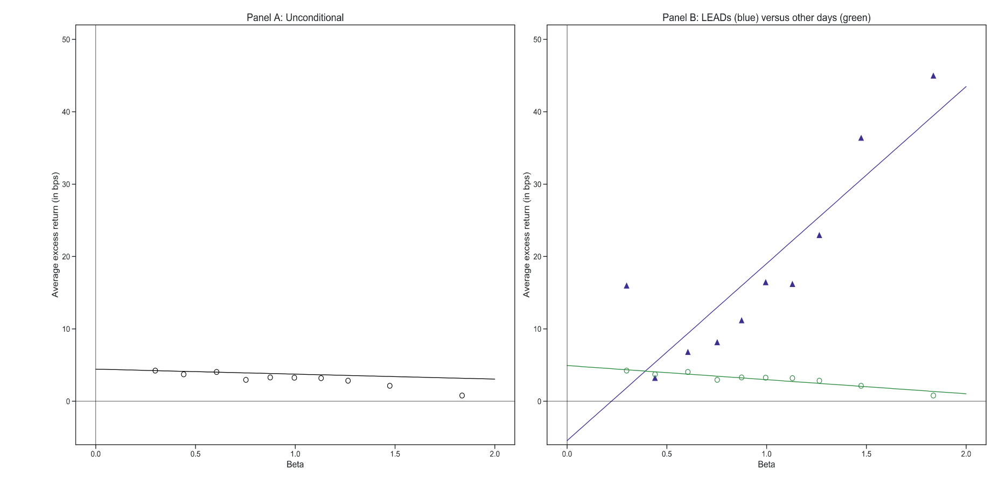
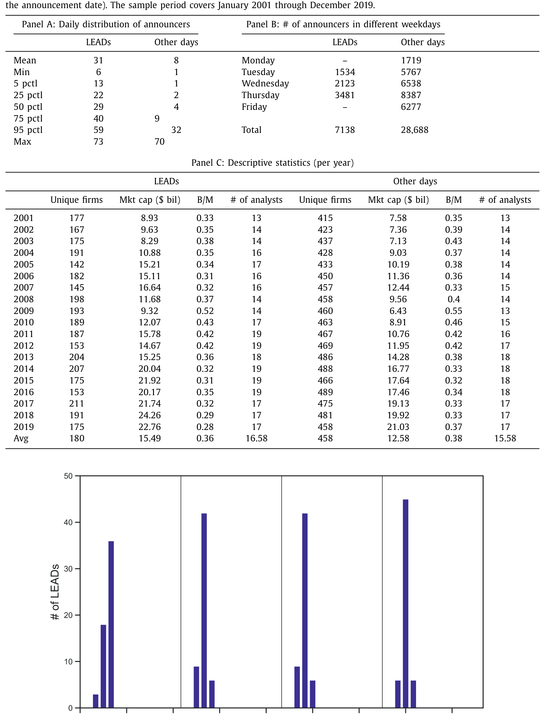
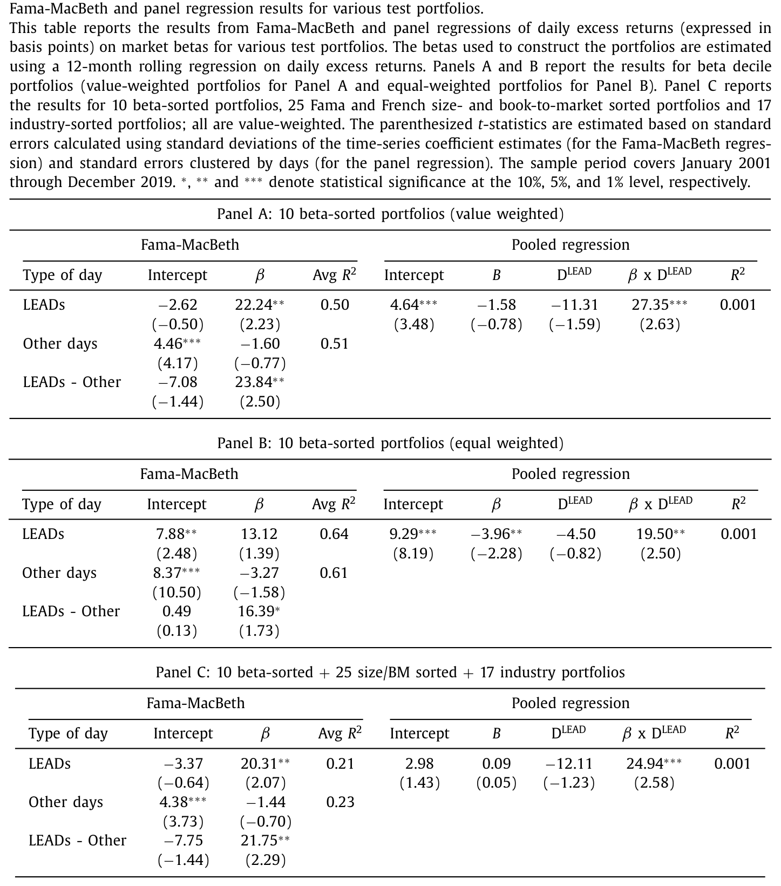
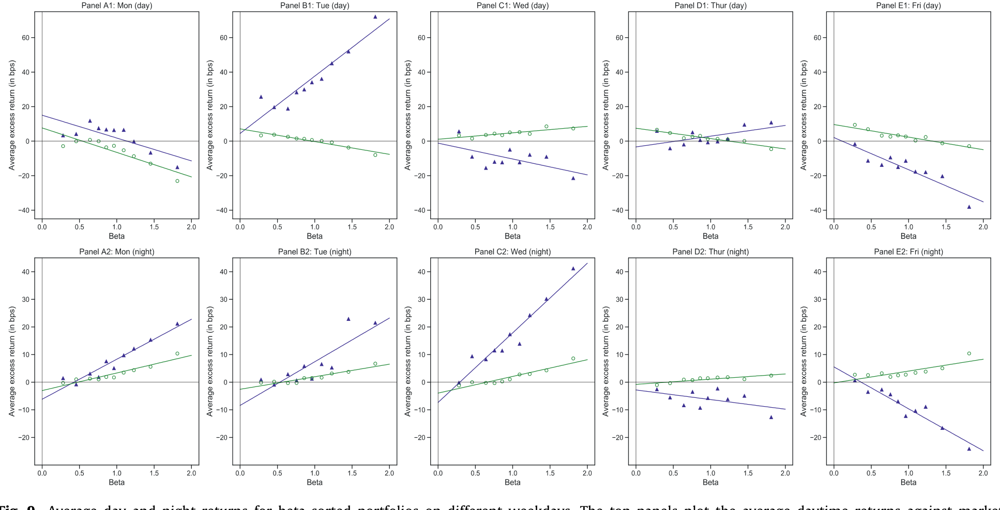
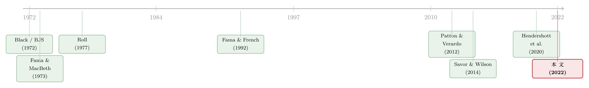

一年只有那么几天，beta 才真正值钱
本文读的是 Chan & Marsh (2022, Journal of Financial Economics)：在 2001–2019 的全样本里，市场 beta 几乎解释不了股票的平均收益——这条「证券市场线」是平的。但只要把目光锁定每个季度财报季开头那几天（作者称之为 LEADs，一批最有影响力的 S&P 500 巨头扎堆披露财报的日子），beta 与收益立刻恢复成 CAPM 课本里那条漂亮的正斜率：beta 每高 1，当日超额收益就多 24.47 个基点（t = 5.14）。这几天只占全部交易日的 5%，却赚走了全样本累计市场超额收益的三分之一。
1 一条「死了」很久的线
每一个学过金融的人，第一堂资产定价课都会画下那条线：纵轴是预期收益，横轴是市场 beta，二者应当是一条向上的直线。这就是 资本资产定价模型 (capital asset pricing model, CAPM) 给我们的全部承诺——你承担的系统性风险越大（beta 越高），市场就该给你越高的回报。
可惜，这条线在数据里几乎从一开始就「躺平」了。早在 Black, Jensen and Scholes (1972) 就发现，高 beta 股票的实际收益没有 CAPM 预测的那么高，低 beta 股票又没那么低——这条 证券市场线 (security market line, SML) 比理论上要平坦得多。到了 Fama and French (1992)，索性宣布 beta 已死：在控制了规模和账面市值比之后，beta 对横截面收益基本没有解释力。
Chan 和 Marsh 用 2001–2019 的数据把这条无条件 SML 又画了一遍（见图 1 的 Panel A），结论一如既往地令人沮丧：斜率只有 -0.69 个基点，t 值 -2.38，几乎是平的；反倒是截距高达 4.44 个基点（t = 14.40），高得离谱。换句话说，承担市场风险这件事，平均下来不仅没有溢价，方向甚至略微反了。这正是过去半个世纪「beta 异象」的核心：风险与回报，似乎脱钩了。

Figure 1: would be consistent with the CAPM, while the sig-
故事如果到这里就结束，那不过是又一篇「CAPM 失败」的祭文。但作者真正想说的是：这条线并没有死，它只是大部分时间在睡觉。
2 把日历摊开：哪几天 beta 会「醒来」？
要理解这篇文章，得先放下「平均」这个词。
我们习惯把所有交易日一视同仁地丢进回归里，算出一个平均的 beta-收益关系。但一个自然的问题是：如果风险溢价并非每天均匀地发放，而是集中在某些「信息爆炸」的日子里被一次性结算呢？那么用全样本去平均，恰恰会把那几天的强信号稀释进无数个「什么都没发生」的安静日子里，最后看上去自然是平的。
这个思路并非凭空而来。Savor and Wilson (2014) 那篇著名的「两天的故事」(a tale of two days) 就发现：在那些预先排定的重大宏观新闻发布日（FOMC 议息、非农、CPI），市场 beta 是被定价的，SML 向上倾斜；而在其余日子里则是平的。（关于「市场组合其实只是一小撮巨头」这条线索，可参见《两种市场收益的故事》。）
Chan 和 Marsh 的洞见是：能「移动市场」的，不只有政府发布的宏观数据，还有一大批巨头公司在同一时间扎堆披露的财报。当苹果、AT&T、波音、IBM、强生在同一个星期接连甩出季报，这本身就构成了一个「宏观级别」的信息事件。
于是真正关键的一步，是给这些日子下一个干净、透明、无后视偏差的定义。作者把它叫做 领先盈余公告日 (leading earnings announcement days, LEADs)，规则简单到近乎朴素：
- 取每个财报季第一周里的周二到周四；
- 要求当周至少有
50家 S&P 500 公司（即十分之一）披露财报。
为什么是周二到周四？因为周一极少有公司发财报（样本中只有约 5% 的 S&P 500 公司在周一披露），而周五则因「临近周末的普遍走神」而效果打折（这一点呼应了 DellaVigna and Pollet (2009) 关于「周五盈余公告」被忽视的发现）。为什么强调「第一周」「早披露」？因为最早、最大的那批公司，信息最新鲜、最有「定调」整个财报季的分量。
这个定义有两个漂亮之处。其一，它只筛规模和时点，不筛结果——LEADers 之所以入选，是因为它们大且早，而不是因为它们事后被证明「重要」，从而避免了自我实现的选择偏差。其二，时点高度可预测：财报季的开头几乎年年落在 1、4、7、10 月的同几周，事先就能在日历上圈出来。

Table 1
数据上，LEADs 平均每天有 31 家巨头披露（周二到周四合计约 93 家），是非 LEAD 日均披露数的四倍；整个样本里 LEAD 公告有 7138 条，其余日子 28,688 条。样本本身来自 CRSP（普通股，share code 10 或 11）与 I/B/E/S，覆盖 2001–2019 共 4227 个交易日、35,826 条 S&P 500 盈余公告。2001 作起点，是因为 Beaver et al. (2018) 等记录了 2000 年后（萨班斯法案、公平披露规则之后）盈余公告信息含量的显著上升。
3 反转：被唤醒的证券市场线
把无条件 SML 拆成「LEADs」和「其余日子」两条，奇迹出现了（图 1 的 Panel B）。
在 LEADs 上，那条蓝线笔直地向上：beta 每增加 1，当日平均超额收益就上升 24.47 个基点（t = 5.14），截距为 -5.44 个基点但 t 值仅 -1.07、并不显著——这正是 CAPM 的标准模样（截距应为零，斜率为正）。更惊人的是回归 R² = 77%，意味着 beta 几乎解释了 LEADs 当天横截面收益变化的绝大部分。
而在其余日子里，那条绿线略微向下：beta 每增加 1，收益反而下降 1.95 个基点，且截距显著为正——恰恰是与 CAPM 相悖的「beta 异象」原貌。
一句话：CAPM 不是错了，而是只在 LEADs 那几天成立。
作者随后用 Fama and MacBeth (1973) 的横截面回归把这件事做严谨。所估计的，正是那条最朴素的 SML：
$$ r_{i,t} - r_{f,t} = \gamma_{0,t} + \gamma_{1,t}\,\beta_{i} + \varepsilon_{i,t} $$
这里 \(\gamma_{1,t}\) 就是当日的市场风险溢价（SML 的斜率），\(\gamma_{0,t}\) 是截距。把 \(\gamma_{1,t}\) 在 LEADs 与其余日子上分别求时间序列均值，二者之差——即「LEAD 减其余日」的隐含风险溢价——高达 23.84 个基点。这个结论对换用面板回归、换用不同检验组合、控制规模与账面市值比、乃至用日内高频收益估计的「已实现 beta」，都稳健成立。

Table 2
这里值得停一秒。LEADs 上的市场溢价比其余日子高出约七倍（作者借 Roll (1977) 的口径计算）。而 LEADs 只占全部交易日的 5%，却贡献了 2001–2019 整段累计对数超额市场收益的三分之一。风险溢价不是细水长流地发放的，它是一年里那么几天，一次性结算的。
为了把这件事「翻译」成钱，作者设计了一个混合策略：在 LEADs 上「押注 beta」(betting-on-beta，做多高 beta、做空低 beta)，在其余日子里切回大家熟悉的「反向押注 beta」(betting-against-beta, BAB，做多低 beta、做空高 beta)。这个混合策略年化夏普比率达到 0.306，而全样本持续做 BAB 的夏普只有 0.113，整整低了三倍。
4 这不会只是别的东西伪装的吧？
一个聪明的读者此刻一定在皱眉：会不会是这些巨头故意把财报提前或推后，让「战略性择时」才是真正的信息事件？作者用一个简单算法，按上一年同一报告季的日期去预测今年的预定披露日，结果只有 205 条（3%）公告被「提前」到 LEADs，27 条（0.4%）被「推迟」——比例小到不足以驱动结果。会不会是「财报暴雷/超预期」的差异？LEADs 上 68.2% 的公告超出分析师一致预期，非 LEAD 日是 65.9%，几乎一样。
更要紧的是，会不会是 Savor and Wilson (2014) 的宏观新闻日在背后捣鬼？作者发现：那些恰好与宏观新闻重叠的 LEADs，和不重叠的 LEADs，beta-收益关系没有差别。换句话说，一旦把这批早披露的巨头纳入考量，宏观公告反而失去了它原本的重要性——LEADs 像是抢在宏观新闻之前，先把市场的贴现率「定了调」。
那么，到底是什么机制让 beta 在这几天「复活」？作者诚实地摆出三条可能的解释，而非强行押注一条：
其一，注意力触发器。 Hirshleifer and Sheng (2019) 指出，当宏观新闻与微观公告同时出现，前者会成为后者的「注意力触发器」。一大批巨头同日发财报，本身就构成一个吸引全市场注意力的「宏观级」事件，从而把分散的微观信息一次性激活。
其二，杠杆约束的松动（Black 式分割）。 Black (1972) 早就提出，平坦的 SML 反映的是市场分割：受杠杆约束的投资者无法充分加杠杆，便愿意为高风险股票多付钱，压低了高 beta 资产的预期收益——这正是 BAB 策略的理论基础（Frazzini and Pedersen, 2014）。当 LEADs 上高 beta 资产的需求结构改变，SML 就可能重新向上倾斜。（关于 beta 异象与「时机」的关系，可参见《波动率之谜，藏在 beta 异象的「时机」里》。）
其三，也是我认为最有说服力的一条——市场风险本身在 LEADs 上升了。 沿着 Patton and Verardo (2012)「beta 会随新闻而动」的思路，作者发现公司在 LEADs 的已实现 beta 显著上升，且涨幅高于在其余日子披露时。一个简洁的均衡口径是：SPDR 指数的日均已实现方差在 LEADs 是 1.62%，其余日子是 1.38%，即市场方差上升约 24 个基点。对一个对数效用的代表性投资者（此时单期 CAPM 恰好成立），这 24 个基点的方差上升，正好对应 24 个基点的市场溢价上升——而这又与前面 Fama-MacBeth 估出的 23.84 个基点惊人地吻合。风险的「数量」上去了，风险的「价格」也就跟着上去了。（这条「beta 会随状态呼吸」的线索，亦可对照《时变的 beta，被低估了二十年的风险》。）
5 一天之内：白天、隔夜与最后一个小时
如果说前面是「哪几天」，那这一步是把放大镜对准「一天之内的哪几个小时」。
作者发现 LEADs 前后的 SML 还会随昼夜切换：LEAD 前一天的白天是一条负斜率的 SML，紧接着的隔夜（即第一个「领先」交易日开盘前）则翻成正斜率；进入 LEAD 当天，beta-收益关系基本是正的、线性的，唯独最后一个交易小时斜率又回归平坦；而 LEAD 之后的那一天，SML 斜率转负。此外还有一个星期效应：正的 beta-收益关系主要出现在 LEAD 周的周二到周四。

Figure 9: Average day and night returns for beta-sorted portfolios on different weekdays. The top panels plot the average daytime returns against mark
这种昼夜交替，与 Hendershott et al. (2020) 关于「白天与黑夜的资产定价」的发现相互印证——作者也专门验证了 LEADs 的结果并非由那条隔夜收益效应所驱动。（关于昼夜收益的拉锯，可参见《白天的「过度纠正」》。）
6 文献脉络
把这条线索捋直，它其实是半个世纪以来「CAPM 究竟错在哪」这场大辩论的最新一站。
起点是 Black (1972) 与 Black, Jensen and Scholes (1972)：前者用「受限借贷」给平坦的 SML 一个理论解释，后者用数据第一次系统地记录了这种平坦。方法上的奠基则是 Fama and MacBeth (1973) 的横截面回归，以及 Roll (1977) 对「CAPM 检验究竟在检验什么」的著名批评。到 Fama and French (1992)，beta 几乎被判了死刑。

转机来自一批「把日历拆开看」的研究。Savor and Wilson (2014) 发现 beta 只在宏观新闻日被定价，Savor and Wilson (2016) 进一步把盈余公告与系统性风险联系起来；Patton and Verardo (2012) 证明 beta 会随新闻流动而变化；Hendershott et al. (2020) 把昼夜拆开；Chan and Marsh (2021) 自己则发现中期选举后的政策不确定性下降同样被定价。本文 (2022) 把这条「条件资产定价」的脉络推到了一个新的、更可操作的位置：风险被定价的窗口，可以用一个事先就能在日历上圈出来的、纯粹按规模与时点筛选的盈余公告簇来识别。
7 评论与延伸（Q&A + 研究方向）
(a) 几个可能的疑问
Q：LEADs 和 Savor-Wilson 的宏观新闻日，到底有什么本质区别？
都是「预先排定的、宏观性质的信息事件」，这是二者的共性。区别在于触发源：Savor-Wilson 是政府发布的总量数据，LEADs 是一簇大公司各自的微观盈余信息在同一时点的聚合。本文的关键证据是，控制住宏观新闻后 LEAD 效应依然存在，且二者重叠与否不改变结果——说明 LEADs 不是宏观新闻日的马甲，反而像是抢在它前面定调。
Q：那条无条件 SML 是平的、截距还高得离谱，会不会只是 beta 估计有噪声？
这正是 Lewellen, Nagel and Shanken (2010) 批评资产定价检验时的核心担忧。但本文的反驳很巧妙：同样的 beta 估计、同样的检验组合，在 LEADs 上能跑出
77%的 R² 和教科书般的正斜率。如果纯粹是 beta 噪声，它不该「只在 LEADs 那几天」变得干净。识别力恰恰来自这种「同一把尺子、两套结果」的对比。
Q：三分之一的累计收益集中在 5% 的交易日，这是不是太极端了？
听起来反直觉，但与「风险溢价高度集中」的一系列证据是一致的（宏观新闻日、隔夜、议息日都有类似现象）。它的政策含义是：长期持有市场组合的回报，绝大部分是在极少数「信息结算日」一次性挣到的；想靠择时躲开这几天，代价可能极其高昂。
Q：betting-on-and-against-beta 的混合策略夏普 0.306，扣掉交易成本还剩多少？
这是我对「经济显著性」那部分最大的保留。策略需要在 LEADs 与其余日子之间频繁切换多空方向，换手率不低；论文给出的是毛口径夏普。LEADs 只占 5% 的交易日确实压低了交易频率，但高/低 beta 组合的构建与再平衡成本仍需更细致地扣除，否则
0.306对0.113的对比会被高估。
Q：为什么是「市场方差上升 24 bps ⇒ 市场溢价上升 24 bps」？这步跳跃靠谱吗？
它依赖一个很强的假设：代表性投资者具有对数效用，此时单期 CAPM 下风险溢价恰等于市场方差。数字上的「24 对 23.84」吻合得近乎完美，漂亮，但也正因为太完美而需要警惕——对数效用是个特例，换一个风险厌恶系数，这个等式就不再成立。我把它看作一个自洽性检验，而非机制的证明。
Q：这对「beta 异象/BAB 策略」意味着什么？
意味着 BAB 的超额收益可能主要来自「其余日子」（占 95% 的交易日），而在 LEADs 上方向是反的。本文提出的混合策略本质上是在说：别无脑全程做空 beta，在风险被定价的那几天，你应该站到 beta 这一边。
(b) 几个可能的研究问题与提案
- LEAD 效应在公司债横截面上成立吗？
- 【经济故事】如果 LEADs 是「整个横截面贴现率一起移动」的日子，那么不只股票，信用利差也应当在这几天系统性地重定价——高久期、高信用 beta 的债券应当在 LEADs 上获得更陡的风险溢价。
-
【可行性】中。需要
TRACE日频债券交易数据构造债券 beta，与 I/B/E/S 的 LEAD 日历对齐。难点在于公司债流动性差、日频收益噪声大，识别需要按规模/流动性分层（可借鉴《把「成交价」从「成交量」里解放出来》的流动性度量）。 -
外资持有人会放大还是抹平 LEAD 溢价？
- 【经济故事】若 LEAD 效应部分源于「注意力触发」和「杠杆约束松动」，那么持有人结构就很关键：受不同监管约束、关注时区不同的外国机构，可能在隔夜段（美国闭市）扮演了不一样的角色，从而改变 LEAD 前后的昼夜 SML 形状。
-
【可行性】中偏低。需要持有人层面的持仓数据（如 13F、或托管层面的国别数据）与高频日内收益结合，识别外资的边际交易行为本身就难，只能做相关性叙事，因果识别较弱。
-
LEAD 日历可预测，能否构造一个「事前」的 beta 择时因子？
- 【经济故事】本文反复强调 LEADs 的时点事先就能在日历上圈出。这意味着可以构造一个纯粹基于公开日历的、不含后视信息的择时信号，检验它在样本外是否仍然有效。
-
【可行性】高。所需数据（CRSP + I/B/E/S 财报日历）公开易得，识别策略就是严格的样本外（out-of-sample）回测；唯一要小心的是交易成本与 LEAD 定义阈值（50 家、周二至周四）的稳健性。
-
把 LEAD 拆到行业/供应链层面：是哪一类巨头在「定调」？
- 【经济故事】并非所有巨头的财报都等价。科技龙头与能源龙头释放的「宏观信息」性质不同，谁的早披露真正驱动了横截面贴现率移动，是一个有趣的分解问题（可对照《互补品的暗线》里供应链信息传导的思路）。
- 【可行性】高。在现有数据上按 SIC/GICS 行业拆 LEADers，重做 Fama-MacBeth 即可；识别清晰，主要是工作量问题。
8 我的判断
这篇文章最大的贡献，不在于又发现了一个「beta 在 X 条件下被定价」的结果——这类结果近年已有一长串（低通胀月、宏观新闻日、低情绪、注意力高时、隔夜……）。它真正的价值在于那个事前可识别、规则透明、几乎无后视偏差的 LEAD 定义：只看「大」和「早」，不看结果，于是把「风险何时被定价」从一个事后拟合的故事，变成了一个事先就能在日历上指认的对象。这是一个方法论上干净利落的进步。
我的两点担忧：其一，三条解释机制是并列摆出的，文章并未真正在它们之间做出区分性检验——「注意力触发」「杠杆约束松动」「市场风险上升」三者完全可能同时成立，但哪条是主导，论文留白了。那个「24 bps 方差对 23.84 bps 溢价」的吻合很诱人，却建立在对数效用这个特例之上，我不会把它当作机制的定论。其二，混合策略的经济显著性是毛口径，频繁切换多空方向后的净夏普才是检验「这究竟是不是钱」的试金石。
后续我最想看到的，是把这套「事前可识别的定价窗口」搬到股票之外——尤其是公司债和信用市场。如果 LEADs 上「整个横截面的贴现率一起移动」这句话当真，那么信用利差理应在这几天露出同样的、被一次性结算的风险溢价。那将是对本文核心论断最有力的一次外部验证。
参考文献
- Black, F. (1972). Capital market equilibrium with restricted borrowing. Journal of Business 45, 444–455.
- Black, F., Jensen, M., Scholes, M. (1972). The capital asset pricing model: some empirical tests. In Studies in the Theory of Capital Markets, Praeger Publishers, 79–121.
- Beaver, W., McNichols, M., Wang, Z. (2018). The information content of earnings announcements: new insights from intertemporal and cross-sectional behavior. Review of Accounting Studies 23, 95–135.
- Chan, K., Marsh, T. (2021). Asset prices, midterm elections and political uncertainty. Journal of Financial Economics 141, 276–296.
- Chan, K.F., Marsh, T. (2022). Asset pricing on earnings announcement days. Journal of Financial Economics 144(3), 1022–1042.
- DellaVigna, S., Pollet, J. (2009). Investor inattention and Friday earnings announcements. Journal of Finance 64, 709–749.
- Fama, E., French, K. (1992). The cross-section of expected stock returns. Journal of Finance 47, 427–465.
- Fama, E., French, K. (2004). The capital asset pricing model: theory and evidence. Journal of Economic Perspectives 18, 25–46.
- Fama, E., MacBeth, J. (1973). Risk, return and equilibrium: empirical tests. Journal of Political Economy 81, 607–636.
- Frazzini, A., Pedersen, L. (2014). Betting against beta. Journal of Financial Economics 111, 1–25.
- Hendershott, T., Livdan, D., Rosch, D. (2020). Asset pricing: a tale of night and day. Journal of Financial Economics 138, 635–662.
- Hirshleifer, D., Sheng, J. (2019). The attention trigger effect: macro news and efficient processing of micro news. Working Paper, University of California, Irvine.
- Lewellen, J., Nagel, S., Shanken, J. (2010). A skeptical appraisal of asset pricing tests. Journal of Financial Economics 96, 175–194.
- Patton, A., Verardo, M. (2012). Does beta move with news? Firm-specific information flows and learning about profitability. Review of Financial Studies 25, 2789–2839.
- Penman, S. (1990). Earnings reporting and the return on the stock market. Working Paper, University of California, Berkeley.
- Roll, R. (1977). A critique of the asset pricing theory's tests part I: on past and potential testability of the theory. Journal of Financial Economics 4, 129–176.
- Savor, P., Wilson, M. (2014). Asset pricing: a tale of two days. Journal of Financial Economics 113, 171–201.
- Savor, P., Wilson, M. (2016). Earnings announcements and systematic risk. Journal of Finance 71, 83–138.